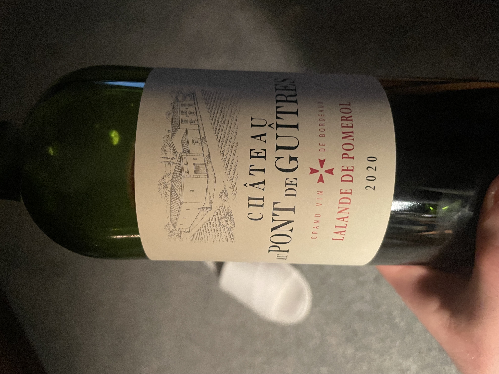
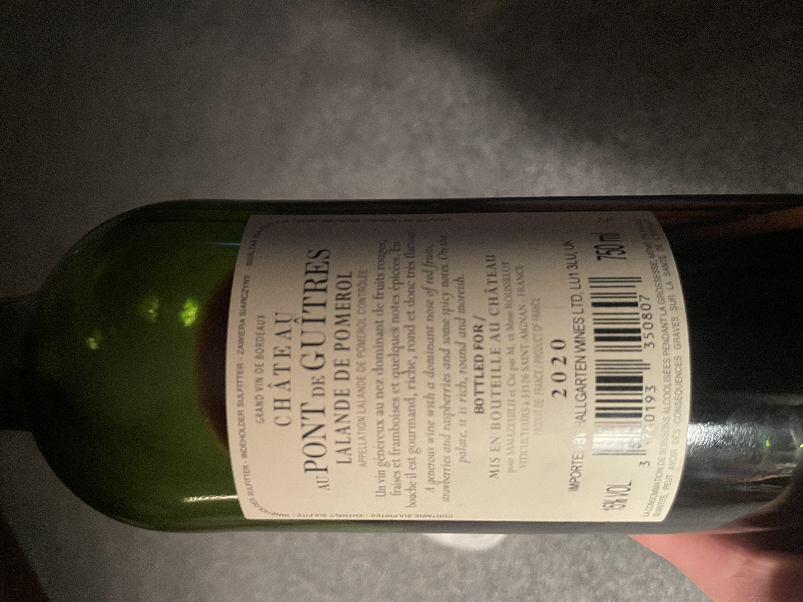
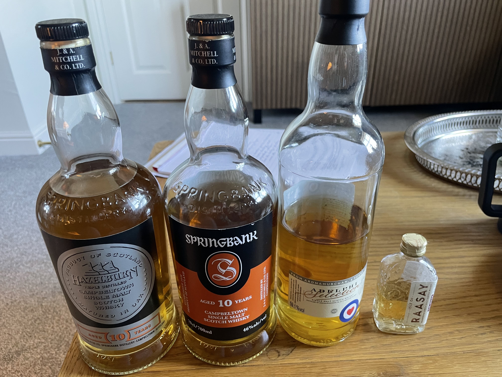

Wine & Whisky
21/10/2025
I am a whisky man, but I'm trying to improve my wine game. I started with the French wine first (focus on the best I say). I tried a Cabernet-Sauvignon (the grape type). I found it a bit tart. I discovered you're meant to leave the wine in the glass at least 15 minutes to oxidise and open the flavour. Next I tried Merlot (another type of grape); I preferred it to Cabernet-Sauvignon. I realised I liked a more full-bodied wine, rather than medium-bodied. The really black stuff. My father recommended Shiraz or Malbec.
Today I tried a Shiraz. I looked for an Australian Shiraz in my local shop, but no luck. So I got a Dutch-South African brand. Screw-top. It's great. My favourite yet. Like father like son I guess.
Next, I try Malbec.


21/10/2025
Yes, the date didn't change...
Malbec is my style. Like the Shiraz. But this might be better. More complex. And you can literally taste the musty warehouse in the background. This one is Bordeaux; the best of the best? It has that next level of complexity, akin to Springbank, and the Malbec, the Shiraz grapes, are my style. A bitter background unlike the previous wine. May be too sophisticated for my wine-palette at the moment. I think now that I preferred the previous one, though the warehouse-background-taste, and bitterness-umami of this one is intriguing. The previous wine was sweeter. Cannot really taste the Shiraz/Malbec distinction yet.
 25/10/2025
Did a mini private whisky tasting myself, starting on the left with Hazelburn 10.
Hazelburn 10 is my current favourite whisky. I've finished a full bottle previously so I know it well. Tastes 'multi-coloured' I like to say, like a rainbow. The triple distillation and no peat makes it interesting, lighter and more delicate, floral with less depth or punch.
Springbank 10. Stronger, punchier, deeper, more condensed. Seems slightly peaty but unsure; it may just be the warehouse must, which you definitely get. Great, and very complex. The Hazelburn 10 is complex, but I've had a whole bottle before so I'm familiar with it. The Springbank 10 is going to take some time to get to know, but it's excellent.
Ardnamurchan 6. Adelphi distillery. Natural colour. Unchillfiltered. RAF edition. This is a young fiesty bastard. It has development and finish. Real vanilla almost almond note. Much dryer than the Springbank corpus. Metallic almost. Clearly bourbon oak. Good finish. Narrower sharper more direct delivery. But enough elements and punch in there. Peculiar almond vanilla nutty sharpness. Sionide. Acidic. Bourbon grass coming through. Crystallic. Sugar. Burnt sugar. Bitter honeycomb. Wriggles its way out to Springbank territory. Less 'whole' delivery because it's young. Honey. Sweet dessert. Tiramisu. I'd like to compare this one with a standard Ardnamurchan.
Isle of Raasay, The Draam, to finish. You want to start with lighter more delicate whisky, then move to higher alcohol content and peat and smoke content to finish. Otherwise, the peatier or stronger whisky just wipes out the subtle ones. This is a stellar lineup. You move from left to right. Hazelburn 10 is triple-distilled, light, delicate, gentle, no peat. Springbank 10 is a step up, condensed sugar fruity pungent punch. I feel there's peat there, or smoke, but maybe it's just warehouse must. Ardnamurchan boosts the alcohol level - 59%. And it switches completely to the Highland style. Campbeltown style is much fruitier, sweet pungent apples, and maybe more Irish - Campbeltown is close to Ireland. Then BAM, you finish with the Isle of Raasay, which is storm-soaked and craggy, and sophisticated even though it's their standard dram. The name's fishy. Very fishy. Smoked mackeral. Soy sauce. Raisin. Tobacco smoke.
